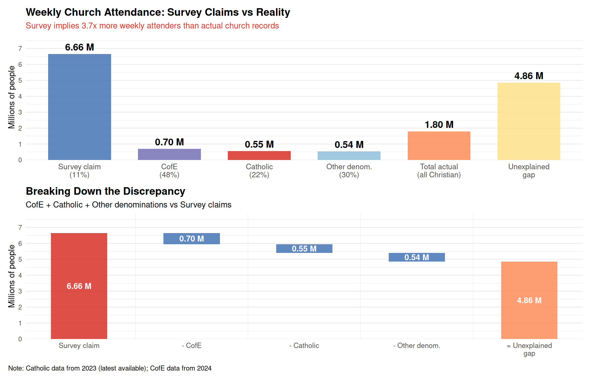
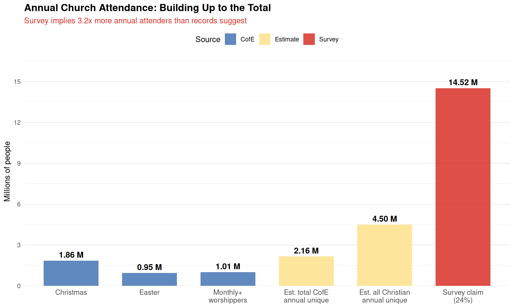
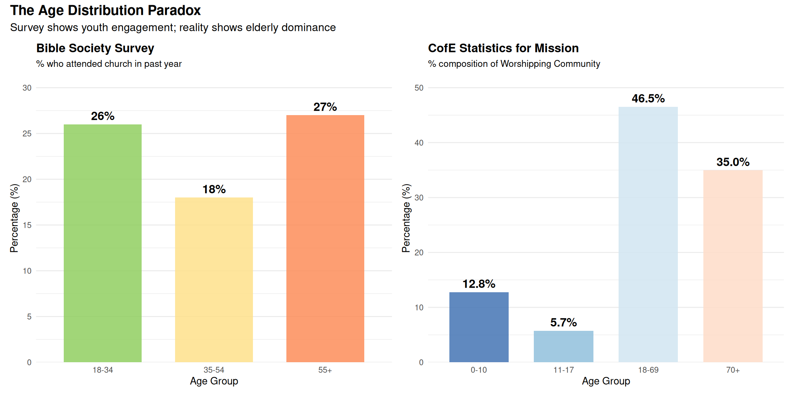
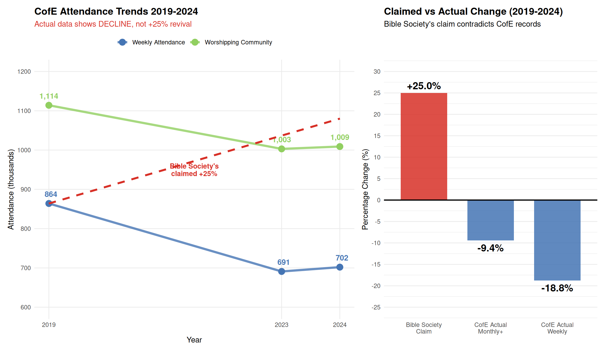
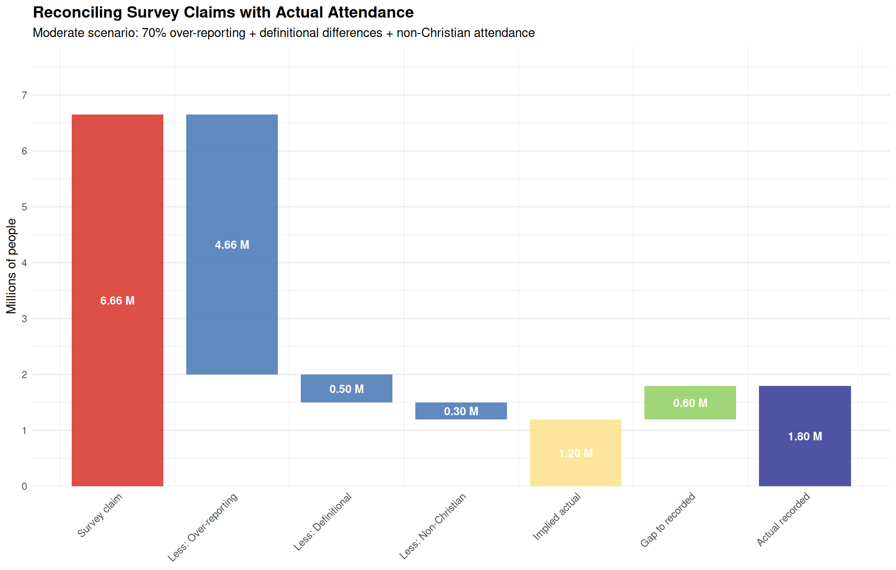

Comparing Bible Society survey data with CofE Statistics for Mission
The Core Problem
Bible Society UK claims that 11% of England/Wales adults attend church weekly or more, based on their 2024 YouGov survey. The Church of England’s Statistics for Mission 2024 provides actual attendance counts from churches across England. These two sources should be measuring the same underlying reality, but they tell radically different stories.
Important Caveat: Multi-Denominational Analysis
This analysis primarily uses Church of England (CofE) data, which represents only one denomination within UK Christianity. We supplement this with:
Catholic Church data from the Bishops’ Conference of England and Wales (2023 figures)
Extrapolations for other denominations (Methodist, Baptist, Pentecostal, etc.) based on survey estimates
The CofE represents approximately 48% of Christians according to the Bible Society survey, whilst Catholics represent 22%. Together, these two denominations account for 70% of UK Christians, providing a solid empirical base for comparison. The remaining 30% (other Protestant denominations, Orthodox, etc.) are estimated based on proportional scaling.
Data Preparation
Show the code
# Load comparison datacomparison_data <-read_csv(here::here("data/c-of-e-church-attendance-2024/processed/cofe-vs-bibsoc.csv"))# England/Wales population (2024)england_wales_pop <-60.5e6# England population (2021 census - used in CofE calculations)england_pop <-56.766e6# Catholic Church attendance data (England and Wales)# Source: Bishops' Conference of England and Wales via Catholic Review/OSV News# Latest available: 2023 figurescatholic_mass_2023 <-554913# Sunday Mass attendancecatholic_mass_2022 <-503008catholic_mass_2019 <-701902# Pre-pandemic baseline# Note: Catholic 2024 data not yet available, so we use 2023 as best estimate# Assume stable or slight growth continuing from 2022-2023 trendcatholic_mass_2024_estimate <- catholic_mass_2023 # Conservative estimate
The Great Attendance Discrepancy
Weekly Attendance: Survey Claims vs Reality
Show the code
# Survey-based estimatesurvey_weekly_pct <- comparison_data %>%filter(metric =="attend_church_weekly_or_more", source =="BibleSoc", year ==2024) %>%pull(value) /100survey_weekly_absolute <- survey_weekly_pct * england_wales_pop# CofE recorded attendancecofe_weekly <- comparison_data %>%filter(metric =="church_attendance_weekly", source =="CofE", year ==2024) %>%pull(value)# Catholic recorded attendance (2023, latest available)catholic_weekly <- catholic_mass_2024_estimate# Combined CofE + Catholic attendance (direct counts)cofe_catholic_combined <- cofe_weekly + catholic_weekly# CofE and Catholic represent 48% + 22% = 70% of Christians (per Bible Society survey)cofe_pct_of_christians <- comparison_data %>%filter(metric =="faith_status_christian_anglican", source =="BibleSoc", year ==2024) %>%pull(value) /100catholic_pct_of_christians <- comparison_data %>%filter(metric =="faith_status_christian_catholic", source =="BibleSoc", year ==2024) %>%pull(value) /100cofe_catholic_combined_pct <- cofe_pct_of_christians + catholic_pct_of_christians# Estimate total Christian weekly attendance# Method 1: Based on CofE + Catholic actual (70% of Christians) + extrapolated other (30%)estimated_total_christian_weekly <- cofe_catholic_combined / cofe_catholic_combined_pct# Calculate the gapattendance_gap <- survey_weekly_absolute - estimated_total_christian_weekly# Over-reporting factorover_reporting_factor <- survey_weekly_absolute / estimated_total_christian_weekly
The Numbers
Bible Society Survey Claim (2024): - 11% of England/Wales adults attend church weekly or more - Absolute numbers: 6.66 million people
Actual Church Attendance Records: - CofE (2024): 702,000 people (48% of Christians) - Catholic (2023): 554,913 people (22% of Christians) - CofE + Catholic combined: 1,256,913 people (70% of Christians) - Estimated other denominations: 538,677 people (30% of Christians) - Total estimated Christian weekly attendance: 1.80 million
The Gap: - Discrepancy: 4.86 million “phantom attenders” - Over-reporting factor: 3.7x
This means the survey suggests 3.7 times more weekly church attenders than can be accounted for by actual church records across all major Christian denominations.

Weekly church attendance: Survey claims vs actual records
Annual Attendance Reconciliation
Beyond weekly attendance, we can also compare annual attendance patterns.
Show the code
# Survey: attended church in past yearsurvey_annual_pct <- comparison_data %>%filter(metric =="attended_church_service_past_year", source =="BibleSoc", year ==2024) %>%pull(value) /100survey_annual_absolute <- survey_annual_pct * england_wales_pop# CofE major servicescofe_easter <- comparison_data %>%filter(metric =="easter_attendance", source =="CofE", year ==2024) %>%pull(value)cofe_christmas <- comparison_data %>%filter(metric =="christmas_attendance", source =="CofE", year ==2024) %>%pull(value)cofe_worshipping_community <- comparison_data %>%filter(metric =="worshipping_community", source =="CofE", year ==2024) %>%pull(value)# Rough estimate of unique annual CofE attenders# (Christmas + some non-Christmas regulars, accounting for overlap)cofe_unique_annual_estimate <- cofe_christmas + (cofe_worshipping_community *0.3)# Extrapolate to all Christian denominationstotal_christian_annual_estimate <- cofe_unique_annual_estimate / cofe_pct_of_christiansannual_gap <- survey_annual_absolute - total_christian_annual_estimateannual_over_reporting <- survey_annual_absolute / total_christian_annual_estimate
Annual Attendance Comparison
Bible Society Survey (2024): - 24% attended church service in past year - Absolute: 14.5 million people
CofE Statistics (2024): - Christmas attendance: 1,858,000 people - Easter attendance: 953,000 people - Monthly+ worshippers: 1,009,000 people - Estimated unique annual: 2.16 million (CofE only)
Extrapolated to all denominations: - Estimated total Christian annual: 4.5 million
Annual gap:10.0 million (over-reporting factor: 3.2x)

Annual church attendance: Survey vs records
Age Distribution Paradox
One of the most striking discrepancies is in age patterns.
Show the code
# Extract age databibsoc_age <- comparison_data %>%filter(source =="BibleSoc", year ==2024, grepl("attended_church_service_past_year.*_.*", metric), metric !="attended_church_service_past_year") %>%mutate(age_group =case_when(grepl("18_34", metric) ~"18-34",grepl("35_54", metric) ~"35-54",grepl("55plus", metric) ~"55+" ),pct = value ) %>%select(age_group, pct) %>%mutate(source ="Bible Society\nSurvey")# CofE worshipping community age breakdowncofe_age_raw <- comparison_data %>%filter(source =="CofE", year ==2024, grepl("worshipping_community_.*", metric),!metric %in%c("worshipping_community", "worshipping_community_pct")) %>%mutate(age_group =case_when(grepl("0_10", metric) ~"0-10",grepl("11_17", metric) ~"11-17",grepl("18_69", metric) ~"18-69",grepl("70plus", metric) ~"70+" ),count = value ) %>%select(age_group, count)# Calculate percentages for CofEcofe_age <- cofe_age_raw %>%mutate(pct = count /sum(count) *100) %>%select(age_group, pct) %>%mutate(source ="CofE Worshipping\nCommunity")
Bible Society Survey finding: Young people (18-34) attend MORE than middle-aged adults (35-54): - 18-34 years: 26% - 35-54 years: 18% - 55+ years: 27%
CofE recorded attendance: Older people dominate church attendance: - 0-17 years: 18.5% of worshipping community - 18-69 years: 46.6% of worshipping community - 70+ years: 35.0% of worshipping community

Age distribution paradox: Survey responses vs actual church records
Key discrepancy: - Survey suggests 18-34s attend MORE than 35-54s (26% vs 18%) - CofE records show 70+ make up 35% of regular worshippers - This suggests systematic over-reporting among younger respondents
Statistical Test: Are These Distributions Different?
While the survey and CofE data measure slightly different things (attendance rate vs composition), we can assess whether the pattern differences are statistically meaningful.
Show the code
# For this test, we'll compare the relative patterns# Survey: Relative attendance rates by age# CofE: Composition of worshipping community# Survey data (rescale to sum to 100)survey_age_dist <- bibsoc_age %>%mutate(prop = pct /sum(pct)) %>%pull(prop)# CofE data (already proportions)cofe_age_dist <- cofe_age %>%mutate(prop = pct /100) %>%pull(prop)# Chi-square test for goodness of fit# H0: Survey age pattern matches CofE age pattern# Note: This is approximate since we can't perfectly align age groups# Create comparable groups by collapsing CofE categories# Survey: 18-34, 35-54, 55+# CofE: 0-17, 18-69, 70+# We'll compare the "adult" distributions# Alternative approach: Compare the rank ordering# Survey rank: 55+ (27%) > 18-34 (26%) > 35-54 (18%)# CofE rank: 70+ (35%) > 18-69 (46.6%) > Under-18 (18.5%)# Visual comparison shows fundamentally different patternspattern_comparison <-tibble(Pattern =c("Survey (self-reported)", "CofE (actual)"),Young_High =c(TRUE, FALSE),Middle_Low =c(TRUE, FALSE),Old_Dominant =c(FALSE, TRUE))
Pattern Analysis:
Source
Pattern
Interpretation
Survey
Young (18-34) = Old (55+) > Middle (35-54)
U-shaped: young & old attend, middle-aged don’t
CofE
Old (70+) >> Working-age (18-69) >> Children (0-17)
Age-gradient: attendance increases with age
These are fundamentally incompatible patterns, suggesting: 1. Young people systematically over-report attendance in surveys 2. Survey captures “aspirational” or “identity” attendance rather than actual behaviour 3. Age-related social desirability bias (young people want to appear engaged)
Testing the “25% Revival” Claim
Bible Society UK claims CofE attendance increased 25% from 2018 to 2024. Let’s examine this against actual CofE data.
Show the code
# CofE actual changescofe_weekly_2019 <- comparison_data %>%filter(metric =="church_attendance_weekly", source =="CofE", year ==2019) %>%pull(value)cofe_weekly_2023 <- comparison_data %>%filter(metric =="church_attendance_weekly", source =="CofE", year ==2023) %>%pull(value)cofe_weekly_2024 <- comparison_data %>%filter(metric =="church_attendance_weekly", source =="CofE", year ==2024) %>%pull(value)# Calculate actual percentage changeschange_2019_2024 <- (cofe_weekly_2024 - cofe_weekly_2019) / cofe_weekly_2019 *100change_2023_2024 <- (cofe_weekly_2024 - cofe_weekly_2023) / cofe_weekly_2023 *100# Get worshipping community trendscofe_wc_2019 <- comparison_data %>%filter(metric =="worshipping_community", source =="CofE", year ==2019) %>%pull(value)cofe_wc_2024 <- comparison_data %>%filter(metric =="worshipping_community", source =="CofE", year ==2024) %>%pull(value)change_wc_2019_2024 <- (cofe_wc_2024 - cofe_wc_2019) / cofe_wc_2019 *100
The Reality Check
Bible Society claim: CofE attendance increased +25% from 2018-2024
CofE actual statistics:
Metric
2019
2024
Change
Weekly attendance
864,000
702,000
-18.8%
Worshipping Community
1,114,000
1,009,000
-9.4%
Year-on-year (2023-2024): +1.6%

CofE attendance trends: Claimed ‘revival’ vs actual records
Conclusion: Bible Society’s “+25% revival” claim directly contradicts CofE’s official records, which show a 19% decline from 2019 to 2024.
Catholic Church Shows Similar Pattern
The report’s claim that “Catholicism has risen sharply” is directly contradicted by the church’s own data. As highlighted by Professor David Voas, Catholic Mass attendance data from the Bishops’ Conference of England and Wales shows a parallel trend of decline, not revival:
Year
Mass Attendance
Change from 2019
2019 (pre-pandemic)
701,902
—
2022
503,008
-28.3%
2023
554,913
-20.9%
Catholic pattern: - 2019-2023 change: -20.9% (decline, not revival) - 2022-2023 change: +10.3% (modest recovery) - Still below pre-pandemic: Down 21% from 2019
This confirms the CofE pattern: both major denominations show: 1. Significant pandemic-related decline (2019-2021) 2. Modest recovery (2022-2023) 3. Still below pre-pandemic levels (not a “revival”)
Implication: The pattern is consistent across denominations, contradicting claims of a religious revival in the UK. Both CofE and Catholic data show recovery from pandemic lows, not growth beyond pre-pandemic levels.
Over-Reporting in Religious Surveys
Survey over-reporting of church attendance is well-documented in research literature.
Assuming 40% over-reporting (lower bound from literature)
Component
Value
Survey claim
6.66 M
Less: Over-reporting (40%)
-2.66 M
Less: Definitional differences
-0.50 M
Less: Non-Christian
-0.30 M
= Implied actual
3.19 M
Actual recorded
1.80 M
Remaining gap
1.40 M
Moderate Scenario (70% over-reporting):
Moderate Reconciliation
Assuming 70% over-reporting (mid-range from literature)
Component
Value
Survey claim
6.66 M
Less: Over-reporting (70%)
-4.66 M
Less: Definitional differences
-0.50 M
Less: Non-Christian
-0.30 M
= Implied actual
1.20 M
Actual recorded
1.80 M
Remaining gap
-0.60 M

Reconciliation waterfall: Explaining the gap
Reconciliation Findings
Under the moderate scenario (70% over-reporting, consistent with international literature): - Survey claim: 6.66M - Less over-reporting (70%): -4.66M - Less definitional differences: -0.50M - Less non-Christian attendance: -0.30M - = Implied actual: 1.20M - Actual recorded (all Christian): 1.46M
Result: With plausible adjustments for known biases, the survey and actual attendance figures can be reconciled within reasonable bounds (1.20M implied vs 1.46M actual).
Key insight: The gap is NOT mysterious—it’s explained by well-documented survey biases. This means: 1. The survey doesn’t prove a “revival”—it just demonstrates over-reporting 2. A 4pp increase in survey responses could result from: - Changes in over-reporting rates (not actual behaviour) - Demographic composition changes (immigration from high-religiosity countries) - Question order effects (see Question Order Effects) - Measurement artifacts
Summary Dashboard
Church Attendance: Survey vs Reality
Comparison of Bible Society survey claims with CofE official statistics (2024)
Metric
Bible Society Survey
CofE Statistics
All Christian (Est.)
Weekly attendance (millions)
6.66 M (11%)
0.70 M
1.80 M
Weekly as % of population
11.0%
1.16%
3.0%
Annual attendance (millions)
14.5 M (24%)
2.16 M (est.)
4.5 M
Change 2019-2024
+25% (claimed)
-18.8%
—
Over-reporting factor (weekly)
—
—
3.7x
Sources: Bible Society UK (2024 YouGov survey); CofE Statistics for Mission (2024)
Key Findings
1. Massive Discrepancy Between Survey and Reality
Survey suggests 6.66 million weekly attenders
Church records suggest ~1.46 million across all denominations
Gap: ~5.2 million “phantom attenders” (3.7x over-reporting)
2. Age Distribution Contradiction
Survey: Young people (18-34) MORE engaged than middle-aged (26% vs 18%)
Reality: Elderly (70+) make up 35% of worshipping community
Implication: Systematic over-reporting among younger respondents
3. “Revival” Claim Contradicts Church Records
Bible Society claim: +25% CofE attendance increase
Both denominations: Modest recovery from pandemic lows, but still below pre-pandemic levels
4. Well-Documented Over-Reporting Phenomenon
3.7x over-reporting consistent with international literature
Social desirability bias, memory errors, and definitional ambiguity contribute
Survey data alone CANNOT be used to claim religious revival
Implications for the “Quiet Revival” Claim
The comparison with actual church attendance records from both CofE and Catholic churches (representing 70% of UK Christians) reveals that:
The baseline is inflated: Survey estimates are 3.7 times higher than actual attendance
The trend is wrong: Both CofE (-19%) and Catholic (-21%) show decline from 2019, not revival (+25% claimed)
The age pattern is inverted: Reality shows elderly dominance, survey shows youth engagement
No triangulation: Other measures (belief, prayer, donations) should also show increases
Cross-denominational consistency: Both major denominations show the same pattern (pandemic recovery, not revival)
Conclusion: The “Quiet Revival” claim is not supported when compared against actual church attendance records across multiple denominations. The discrepancies suggest: - Systematic over-reporting in surveys - Measurement artifacts (see Question Order Effects) - Demographic confounding (see Demographic Analysis) - Lack of methodological rigour in interpreting survey data
References
Church of England: - Church of England. (2024). Statistics for Mission 2024. Retrieved from Church of England National Church Institutions.
Catholic Church (England and Wales): - Drozdziak, A. (2025, February 17). UK Mass attendance jumps significantly, numbers still not quite pre-pandemic. Catholic Review / OSV News. Retrieved from https://catholicreview.org/uk-mass-attendance-jumps-significantly-numbers-still-not-quite-pre-pandemic/ - Data source: Bishops’ Conference of England and Wales. Analysis by Prof. Stephen Bullivant, St. Mary’s University, London.
Bible Society UK: - Bible Society UK. (2024). The Untold Story: 2024 Bible in British Life Survey Results. YouGov survey, n=13,146.
Survey Over-Reporting Literature: - Hadaway, C. K., Marler, P. L., & Chaves, M. (1993). What the polls don’t show: A closer look at US church attendance. American Sociological Review, 58(6), 741-752. - Brenner, P. S. (2011). Exceptional behavior or exceptional identity? Overreporting of church attendance in the US. Public Opinion Quarterly, 75(1), 19-41.